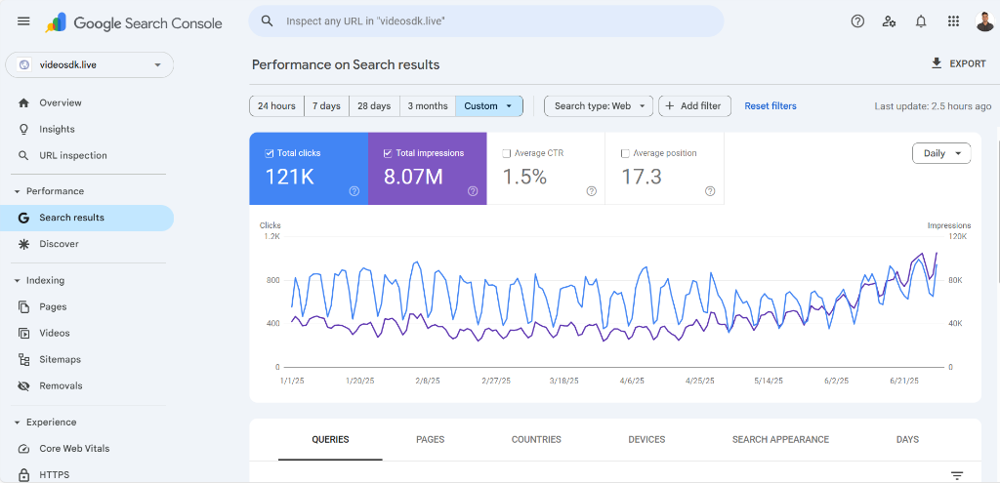
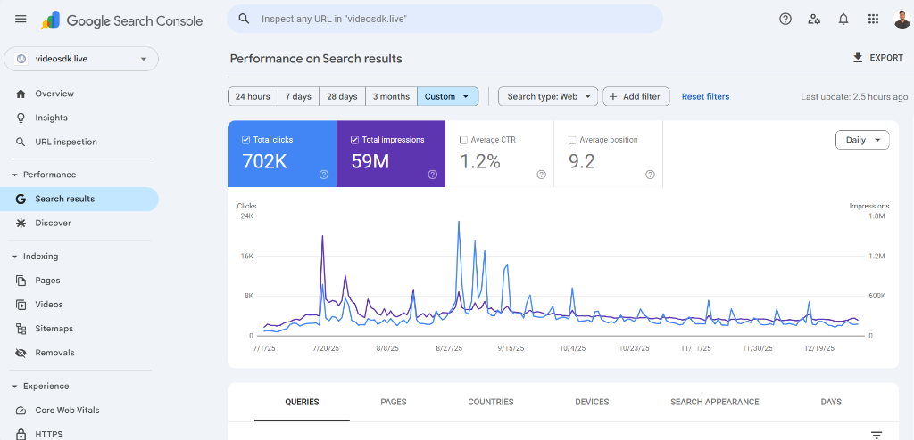
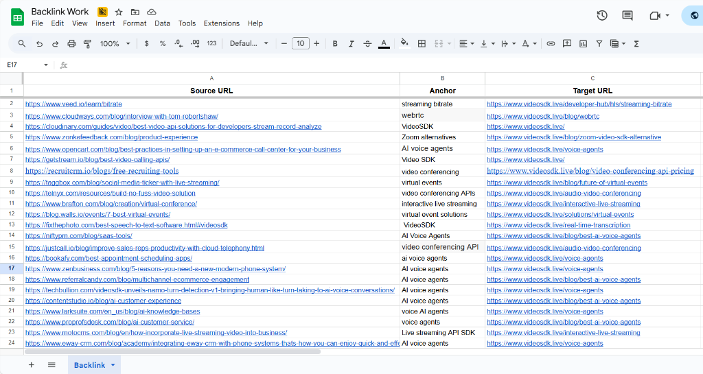
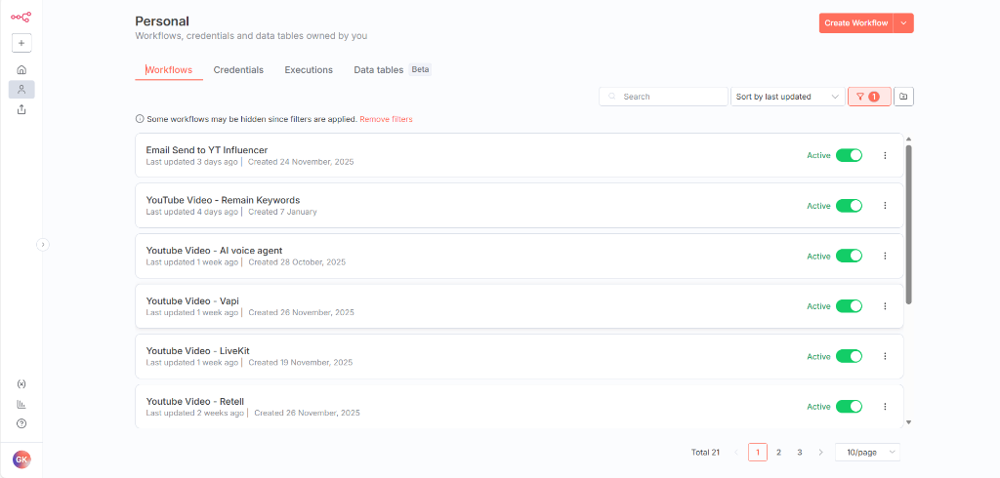

Proof of Impact
Real results driven by data and execution.
Numbers verified by Google Search Console and HubSpot not estimates.
7K → 150K+
Monthly Organic Traffic
~85% MoM Growth at VideoSDK
Verified by GSC
Jan - June 2025

July - Dec 2025

+85%
MoM Inbound Leads Growth
Significant scaling of qualified leads
Verified by HubSpot
Jan - Jun 2025

Jul - Dec 2025

+12%
MoM MQL Growth
Consistent lead quality improvement
Verified by HubSpot
Jan - Jun 2025

Jul - Dec 2025

+10%
MoM Sales Growth
Direct revenue impact from organic
Verified by HubSpot
Jan - Jun 2025

Jul - Dec 2025

100+
High-Authority Backlinks
Live on HubSpot, Cloudways, Uniqode, Veed.io & more
Live Links

30+
Automations Built
Saved 30+ hrs/week in manual ops via n8n
N8N Execution

30+
Blogs Ranking Top 7 in SERP & LLMs
Written for VideoSDK, majority in Top 7 on Google & cited by LLMs
Live on VideoSDK Blog
Published Blog Posts
How to Build a Video KYC System for Credit Card Onboarding
How to Build a Video KYC System for NBFCs in India
Video KYC Agent Dashboard: How to Build an Operator Interface
How to Build a Video KYC System for Cooperative Banks in India
How to Scale Video KYC to 1 Million+ Monthly Verifications
IRDAI VBIP Compliance Guide for InsurTech
SEBI Video KYC Compliance Guide for Stockbrokers
How to Build an LGPD-Compliant Telehealth App in Brazil
How to Build a Video KYC System for the Middle East
How to Build an Online Doctor Consultation Platform
How to Integrate Liveness Detection in Android and iOS Video KYC Apps
How to Reduce Patient Drop-off in Telemedicine Video Calls
How to Implement Video-Based Auto Insurance Claim Adjustments
Video KYC Success Rate Optimization (Reducing Drop-off)
The Non-Technical Founder's Guide to Adding Video Calls
How to Evaluate a Video KYC Vendor: RFP Checklist for Banks
How IT Integrators Can White-Label Video KYC for BFSI
How to Scale Multi-Host Live Streaming for Collaborative Rooms
How to Build a Social Live Streaming App Like TikTok Live
How to Make Video Calls Work in Low-Connectivity Areas (WebRTC Guide)
How to Build a Mental Health Video Consultation App: Developer Guide & Compliance
Checklist
Video KYC vs eKYC vs Physical KYC: 2026 Comparison
How to Build a HIPAA-Compliant Telemedicine App with React
WebRTC vs Zoom SDK vs VideoSDK for Telehealth: Which is Best in 2026?
How to Build a Live Video Cam Room App with WebRTC
Why Your Social Live Video App Feels Slow and How to Fix It
How to Add Secure 1:1 Video Chat to a React Native Dating App
How to Build a Low-Latency Live Audio Room App in Flutter
Why System Integrators Choose VideoSDK Over Open-Source WebRTC
VideoSDK vs Twilio vs Agora: Which is Best for BFSI Video KYC?
1,000+
Developer Signups via Influencer Marketing
20+ tech YouTube videos live, tracked via unique creator signup links
YouTube Influencer Campaign
Featured Tech YouTube Creators
Piyush Garg — 393K subscribers
PROROZ — 86K subscribers
VIRTUAL CODE — 34K subscribers
Code With Arjun — 36K subscribers
Daniel Jora | AI Learner — 27K subscribers
Papaya Coders — 26.5K subscribers
Shweta Lodha — 14K subscribers
New Office Mind — 1.5K subscribers
Code With Yousaf — 47K subscribers
Prompt Engineer — 25K subscribers
Patel MernStack — 37K subscribers
Dear Programmer — 33K subscribers
No Code Academy — 9.2K subscribers
Ritesh Hegde - Your No-Code Partner — 7K
subscribers
UBprogrammer — 3.1K subscribers
Kalyug Ka Coder — 2.8K subscribers
Coding Zone — 695 subscribers
Master Yadu — 3K subscribers
JG universe — 2.1K subscribers
Abdulhamid Abdullahi Sulaiman — 1.2K subscribers
LumenLearn — 1.8K subscribers
James Bradford | AI Avatars — 786 subscribers